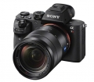
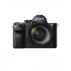
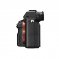
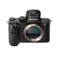
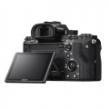
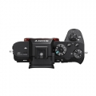
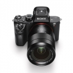

器材库 > 35mm画幅可换镜头数码相机 > A7RII

规格总览
产品类型
35mm画幅可换镜头数码相机
发布日期
2015-06-11
厂家推荐价格
18,999.00 （人民币）
影像规格
影像传感器
Exmor R CMOS
影像传感器尺寸
35.9x24.0mm(35mm全画幅）
有效像素
约4240万
最大解像度
3:2（全画幅） L:7952 x 5304 (42M) 16:9（全画幅） L: 7952 x 4472 (36M)
静态图像格式
JPEG, RAW, RAW+JPEG
画幅比
3:2, 16:9
短片尺寸
XAVC S 4K:3840x2160(25p/100Mbps,25p/60Mbps)
短片格式
MPEG4, AVCHD, XAVC S
防抖系统
五轴防抖
镜头和对焦
镜头卡口
Sony E
兼容镜头
索尼E头
对焦系统类型
混合式自动对焦(相位检测式 & 反差式)
对焦点
399点相位检测自动对焦/25 点对比检测自动对焦
对焦模式
广域/区/中间/自由点（L,M,S)/扩展自由点/锁定AF
自动对焦点选择
自动, 手动
AF辅助灯
有
手动对焦
支持
曝光控制
测光系统
1200区测光
测光模式
点测光, 中央点测光, 平均测光
测光范围
-3EV至20EV （ISO100， F2.0镜头）EV
快门类型
电子控制，纵走式，焦平面快门
快门速度
1/8000秒 - 30秒(视频拍摄时:1/8000秒至1/4秒）,B门
曝光补偿
±5EV
自动曝光锁
有
ISO感光度
可扩展至50-102400
连拍
最快约5张/秒
闪光灯
内置闪光灯
无
取景器/显示屏
取景器
EVF电子取景器
取景范围
100%
取景放大倍率
约0.78倍（使用50mm镜头，无限远对焦，屈光度为-1m-1时）倍
反光镜
无
LCD类型
TFT LCD
LCD尺寸
3.0英寸
LCD像素
约128万像素万
视野率
100%
Live View
有
文件输入/输出
存储卡
MS/MS PRO记忆棒, SD/SDHC, SDXC
视频/音频接口
Micro HDMI 接口
无线功能
Wi-Fi, NFC
电源
电池
锂离⼦电池组2个 NP-FW50（随机附送）
续航能力
约290张（取景器），约340张（LCD）
外接电源
USB充电，电池充电器BC-VW1
机身规格
材质
金属
颜色
黑/黑色
尺寸
约126.9x95.7x60.3mm
重量
约582(仅主机）g
其它
工作温度
0-40℃
匿名网友2017-11-23 09:314.94 分
操作性 5.00功能性 5.00美观性 5.00趣味性 5.00耐用性 5.00性价比 4.50解像力 5.00色彩还原 5.00
kanon2017-01-31 23:134.75 分
操作性 5.00功能性 5.00美观性 5.00趣味性 5.00耐用性 4.50性价比 4.00解像力 5.00色彩还原 4.50
iron01292016-11-18 11:244.25 分
操作性 2.00功能性 5.00美观性 5.00趣味性 5.00耐用性 5.00性价比 4.00解像力 5.00色彩还原 3.00
matthewzhao2016-06-21 21:044.75 分
操作性 4.50功能性 5.00美观性 4.50趣味性 5.00耐用性 4.50性价比 4.50解像力 5.00色彩还原 5.00
天地旅者2016-05-15 16:154.88 分
操作性 5.00功能性 5.00美观性 4.50趣味性 5.00耐用性 5.00性价比 4.50解像力 5.00色彩还原 5.00
无忌社长2016-04-01 17:524.88 分
操作性 5.00功能性 5.00美观性 4.50趣味性 5.00耐用性 5.00性价比 4.50解像力 5.00色彩还原 5.00
chentangA2016-03-07 10:254.56 分
操作性 5.00功能性 5.00美观性 4.50趣味性 4.50耐用性 4.50性价比 4.00解像力 4.50色彩还原 4.50
浮世君2016-03-05 00:575 分
操作性 5.00功能性 5.00美观性 5.00趣味性 5.00耐用性 5.00性价比 5.00解像力 5.00色彩还原 5.00
山博2016-02-14 22:014.75 分
操作性 5.00功能性 5.00美观性 5.00趣味性 4.50耐用性 5.00性价比 4.00解像力 5.00色彩还原 4.50
哈斯2016-01-31 23:594.56 分
操作性 4.50功能性 5.00美观性 4.00趣味性 5.00耐用性 4.50性价比 5.00解像力 4.00色彩还原 4.50
takapuna2015-12-02 15:514.38 分
操作性 5.00功能性 5.00美观性 4.00趣味性 4.00耐用性 4.00性价比 4.00解像力 5.00色彩还原 4.00
liusm12342015-11-25 09:294.81 分
操作性 4.50功能性 5.00美观性 5.00趣味性 5.00耐用性 4.50性价比 4.50解像力 5.00色彩还原 5.00
liusm12342015-11-05 21:52
stvwyhc2015-10-31 11:284.44 分
操作性 4.50功能性 5.00美观性 4.00趣味性 5.00耐用性 3.00性价比 4.00解像力 5.00色彩还原 5.00
石页2015-09-28 22:314.94 分
操作性 5.00功能性 5.00美观性 4.50趣味性 5.00耐用性 5.00性价比 5.00解像力 5.00色彩还原 5.00
产品图 / 样片






评测 / 相关文章
- 详细内容 （存档）
- 全能战神 全画幅微单索尼A7RII详细评测 （存档）
- ［资讯］外媒索尼A7RII无反相机拆解 （存档）
- ［试用］索尼全画幅微单A7RII实拍样片 （存档）
- ［资讯］探秘全画幅微单A7RII 索尼高层访谈录 （存档）
- ［资讯］外媒测试α7RII视频动态范围超过α7S （存档）
- ［资讯］索尼访谈：A7R II并非5DS的残疾版 （存档）
- ［资讯］索尼访谈：A7RII使用佳能镜头天衣无缝 （存档）
- ［资讯］五轴防抖+4K视频 索尼A7R II点评 （存档）
- ［资讯］索尼新机A7R II将很快上市销售 （存档）
相关文章
- ［资讯］外媒索尼A7RII无反相机拆解 （存档）
- ［试用］全画幅微单索尼A7RII详细评测 （存档）
- ［试用］索尼全画幅微单A7RII实拍样片 （存档）
- ［资讯］探秘全画幅微单A7RII 索尼高层访谈录 （存档）
- ［资讯］外媒测试α7RII视频动态范围超过α7S （存档）
- ［资讯］索尼访谈：A7R II并非5DS的残疾版 （存档）
- ［资讯］索尼访谈：A7RII使用佳能镜头天衣无缝 （存档）
- ［资讯］索尼微单旗舰机型A7RII正式发布 （存档）
- ［资讯］五轴防抖+4K视频 索尼A7R II点评 （存档）
- ［资讯］索尼新机A7R II将很快上市销售 （存档）
- ［资讯］为什么索尼A7R II比富士GFX更有吸引力 （存档）
- ［资讯］不服不行 看一台索尼A7RII的装配全过程 （原站已下线）
- ［资讯］富士GFX与645Z、A7RII等画质大乱斗 （原站已下线）
- ［资讯］富士GFX vs宾得645Z高ISO测试 （原站已下线）
- ［行情］索尼A7R II机身新春限时特价 （原站已下线）
- ［行情］双12疯抢 索尼A7R II机身限时低价 （原站已下线）
- ［试用］转接极致 佳能大眼睛50/1.2L搭配索尼A7RII （原站已下线）
- ［行情］索尼高画质机A7R II机身低价 （原站已下线）
- ［试用］胡渣大大现身说法 索尼A7RII万言书（下） （原站已下线）
- ［试用］胡渣大大现身说法 索尼A7RII万言书（中） （原站已下线）
- ［行情］索尼A7RII单机特价 （原站已下线）
- ［行情］索尼A7RII单机特价 （原站已下线）
- ［行情］索尼A7RII机身限时特价 （原站已下线）
- ［行情］索尼A7RII单机特价 （原站已下线）
- ［试用］迢迢牵牛星 皎皎河汉女 （原站已下线）
- ［试用］单反以后——谈谈徕卡、富士、索尼系统 （原站已下线）
- ［试用］2017SWPA伦敦行 雾都遗梦与乡村风尚 （原站已下线）
- ［资讯］索尼微单迎来集体固件升级 （存档）
- ［资讯］A9与A7RII高感对比测试 （原站已下线）
- ［试用］索尼A7RII也能拍体育 索尼运动影像小集 （原站已下线）